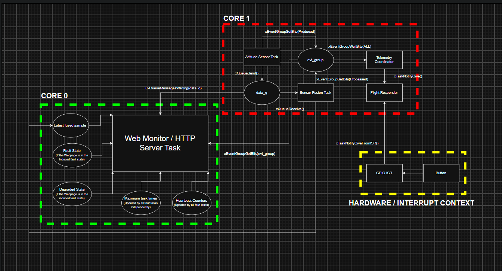
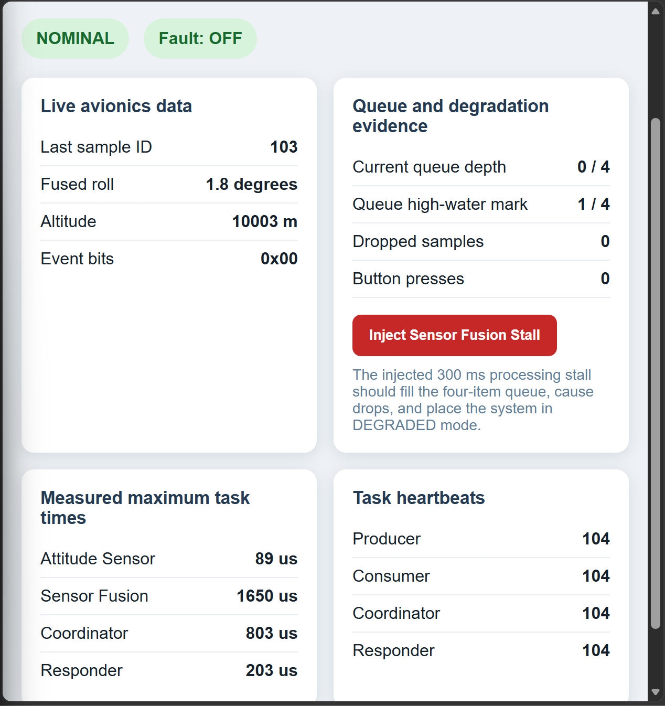
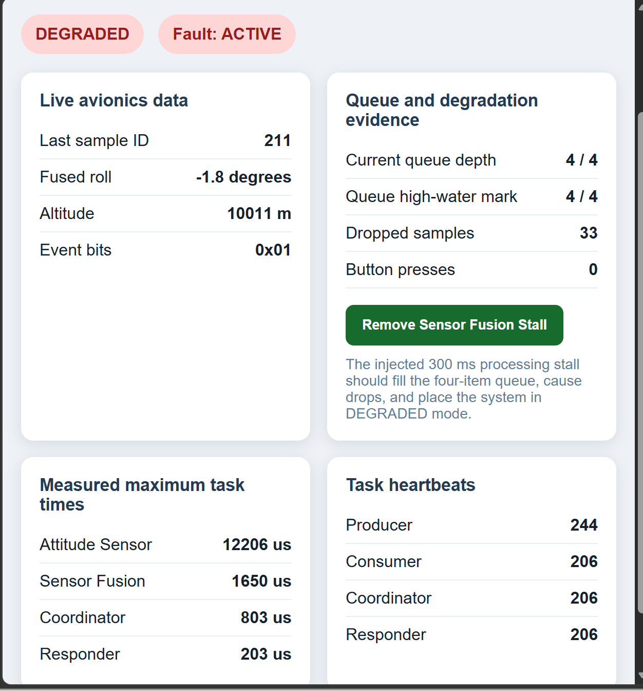
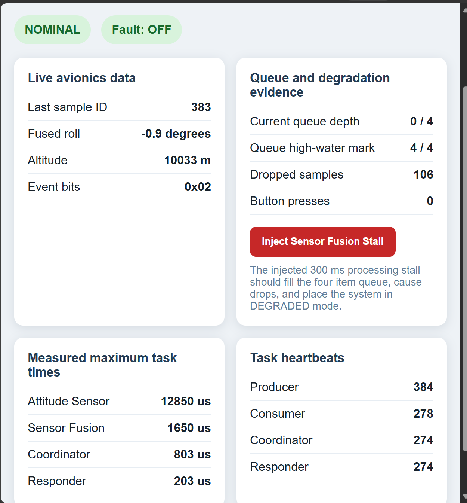

Project Overview
This project simulates an avionics attitude-processing pipeline using FreeRTOS on an ESP32-S3.
Core 1 runs the real-time tasks responsible for sensor generation, sensor fusion, telemetry coordination, and response handling. Core 0 runs the Wi-Fi and HTTP observability system.
The system uses a typed queue, an event group, direct task notifications, a GPIO interrupt, and a mutex-protected status structure.
Project Demonstration
This demonstration shows the nominal avionics pipeline, the FreeRTOS architecture, an injected Sensor Fusion stall, queue saturation, controlled sample loss, and automatic recovery.
System Architecture
The real-time processing pipeline is isolated from the web-monitoring workload by assigning them to separate processor cores.

Task Architecture and Timing Evidence
The real-time pipeline runs on Core 1, while the HTTP observability workload runs on Core 0. Maximum task-body durations were measured using the ESP32 high-resolution timer.
| Task | Activation | Core | Priority | Purpose | Nominal Maximum | Worst Observed |
|---|---|---|---|---|---|---|
| Attitude Sensor | 50 ms periodic | 1 | 8 | Generate simulated attitude data and send it through the queue | 89 µs | 12,850 µs |
| Sensor Fusion | Queue arrival | 1 | 8 | Combine gyroscope and accelerometer roll measurements | 1,650 µs | 1,650 µs |
| Telemetry Coordinator | Event-group rendezvous | 1 | 9 | Wait for production and processing completion | 803 µs | 803 µs |
| Flight Responder | Task notification | 1 | 12 | Respond to completed pipeline cycles and GPIO interrupts | 203 µs | 203 µs |
| HTTP Server | HTTP request and polling | 0 | 5 | Serve telemetry, timing evidence, and fault controls | Not instrumented | Not instrumented |
During fault injection, the four-item queue became full. The producer waited for up to 10 ms for queue space before applying its drop-newest policy. The measured value therefore includes bounded queue-waiting time and is not computation-only WCET.
Fault Injection and Recovery
A web-controlled fault introduces a 300 ms delay into the Sensor Fusion task. The producer continues running every 50 ms, causing the queue to fill and new samples to be dropped.
1. Nominal

Queue depth is near zero, no samples have been
dropped, and the system reports
NOMINAL.
2. Degraded

The queue reaches four items, drops increase, and
the system reports DEGRADED.
3. Recovered

After the fault is removed, the queue drains and
the system returns to NOMINAL.
Observed Fault Sequence
| State | Fault | Queue Depth | High-Water Mark | Dropped Samples | Result |
|---|---|---|---|---|---|
| Initial Nominal | Off | 0 / 4 | 1 / 4 | 0 | Pipeline keeps pace with the 20 Hz producer |
| Degraded | Active | 4 / 4 | 4 / 4 | 33 | Queue saturated and controlled sample drops began |
| Recovered | Off | 0 / 4 | 4 / 4 | 106 | Queue drained and the system automatically returned to nominal operation |
Hazard Analysis
The following table identifies representative failure modes, their effects, and the mechanisms used to detect or mitigate them.
| Hazard | System Effect | Detection | Mitigation |
|---|---|---|---|
| Sensor Fusion processing stall | Queue fills and telemetry data becomes stale | Queue depth, high-water mark, dropped-sample count, and heartbeat divergence | Enter degraded mode, apply bounded waiting, and drop the newest samples |
| Queue overflow | Newly generated attitude samples are lost |
Failed xQueueSend() and incrementing
drop counter
|
Wait for up to 10 ms, log the event, then drop the newest sample |
| Consumer stops advancing | Producer continues while fusion results become stale | Producer heartbeat advances while consumer heartbeat stops | Report degraded operation; a production system could restart the task or trigger a watchdog response |
| Button contact bounce | Multiple false interrupt events | Unexpectedly high accepted-button count | Apply a 200 ms debounce interval inside the ISR |
| Invalid responder task handle | FreeRTOS assertion or system reset during notification | Task-creation return-value and handle checks | Create the responder before notification sources and verify its handle |
| Inconsistent dashboard snapshot | Related fields may describe different processing cycles | Contradictory or inconsistent displayed values |
Protect system_status_t with a mutex and
copy the structure before formatting JSON
|
| HTTP workload interferes with timing | Increased scheduling jitter in the real-time pipeline | Task-duration and latency measurements | Pin networking and the HTTP server to Core 0 |
Engineering Skills Demonstrated
- FreeRTOS task creation and priorities
- Dual-core workload separation
- Queue back-pressure and bounded blocking
- Event-group synchronization
- Direct task notifications
- ISR-safe FreeRTOS APIs
- Mutex-protected shared state
- Execution-time measurement
- Fault injection and graceful recovery
- Embedded Wi-Fi and HTTP monitoring
About This Project
This is an educational simulation inspired by avionics timing, observability, and fault-management practices. It is not a certified airborne system.
Developed by Eduardo Rivera, Electrical Engineering student at the University of Central Florida.